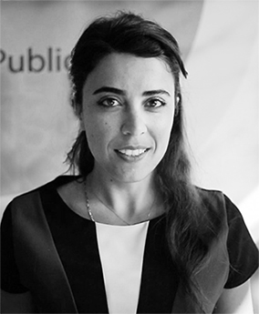
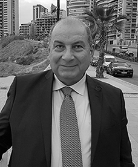
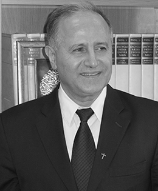
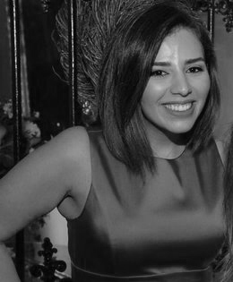

Board of Directors
The Board of Directors are a group of passionate leaders ready to bring the cause of Min ila to life.
-

Tala Khlat
Founder and President
-

Bachir Osmat, PhD
Vice President
-

Joy Abi Habib
Secretary
-

Pr. Salim Daccache, s.j.
Treasurer
-

Sima Antabli
Accountant
About Sima Antabli
With over eleven years of experience in volunteering with various NGOs and INGOs, Sima Antabli currently works as the Prevention Program Manager at Himaya, a Lebanese NGO that aims to fight child abuse in all its forms such as physical, psychological, sexual, and neglect. Through awareness activities, Himaya teaches parents, schools, and children how to prevent abuse and offer guidance to children on how to defend themselves. With a Master’s degree in Social Work specialized in working with the youth and civic engagement from the Saint Joseph University, Sima has many professional experiences which include several other programs related to the development of the youth. Since 2011, she is also a member and focal point in charge of the Youth Peer Education Network.
General Assembly
As a vital part of the team, they are a talented group striving to achieve the goals of Min ila.


Interns
As part of the Internship program at Min ila, we always have a dedicated young group to aid our objective.